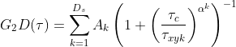
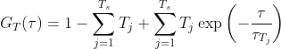

Figure 2) Fit controls detail.
File import and fitting parameters.
1) Previously correlated data files, can be loaded int FoCuS-fit-JS software using the 'Choose Files' button. Loaded files will appear in the Data Viewer on the right-hand side (C).
2) The first drop-down box with Equation 1A as default refers to which diffusion equation to use and the way in which the axial diffusion component is handled when fitting a 3D diffusion equation. The second drop-down box, describes which of the two triplet state equations to use, either 'no triplet' or 'Triplet Eq. 2A' or 'Triplet Eq. 2B'. The final dropdown box sets whether 2D or 3D diffusion is used. N.B. More details about the equations are described in Diffusion coefficient calculation section of this manual.
3) Once the equations have been chosen the number of diffusing species and triplet states can be selected in the next row of interface controls, 1-3 in both cases.
4) Every correlated curve has fit parameters associated with it. To view the parameters of any of the correlated data, select it from the drop-down list 'Display model parameters for data'. When this data-file is selected in this list its parameters will appear below.
5) When clicked, the button marked 'Current' fits a curve to the selected data-file using the parameters depicted in (8). Whereas, the button marked 'All' will fit all of the correlation functions loaded in the data-series box (C) with the parameters currently shown in (8). The button marked 'Only highlighted' will fit those data-files that have been highlighted in the data-series box (C) with the displayed parameters.
6) The 'Fit from' and 'to' fields refer to time range which will be fit and is linked to the grey bar limits which are shown in the plot area (8).
7) For complicated experiments, where multiple fit parameters are changed from the defaults, it can be useful to save the fit profile to make it straight-forward to repeat the experiment. During a single session this can be done through using the ‘store’ button to save the currently used settings, and the ‘apply’ button to apply them. If the settings will be used for subsequent experiments it can be useful to write them onto the host computer, do this by using the ‘save’ button and then later loading them through using the ‘load’ button.
8) This section contains the parameters that are fit as well as the controls that control the fitting. The parameters that are visible are linked to the equation options that have been selected using the menus in (2-3). (9) The left-hand column specifies the variable name of this fit parameter. (10) During the fitting each variable will be initiated at the value specified in the ‘Init’ column. During fitting those parameters that have the 'vary' check box (11) checked will be estimated by the fit algorithm within the ranges specified by the 'min' (12) and 'max' (13) boxes which are specified for each parameter.
The parameters afor the data-series can be exported to the clipboard (14) or saved (15)) using these buttons. If data is specifically highlighted in the Data Viewer box (C) it alone will be copied and not all the data in the data series.

Figure 3) Main plot detail.
Main Plot Window
1) Above the plot window is a Navigation Toolbar. The tools on the toolbar allow manipulation of the plotted correlation functions. The 'Zoom/Scaling' buttons allows the user to zoom in and out of the visualisations and controls how the plot can be moved. By clicking the 'Both' option (default) the plot, when mainpulated with the mouse will expand and contract, and move in both the x-axis and y-axis. If 'Vertical' is selected then the plot will scale and zoom only in the y-axis. Similarly, if the 'Horizontal' option is selected the plot can only be manipulated in the x-axis. This options allow the user to easily zoom and scale plots, especially when the amplitudes of the curves vary drammatically. Click 'Reset' to remove any previous movement or zoom transformation, click 'Zoom in' to expand the plot in the display by 10%, click 'Zoom out' to shrink the plot conversely by 10%. Alternatively, Zoom actions can be performed by rolling the mouse button either forwards or backwards2) This is the main plot window. The data-files which has been checked in the Data Viewer (C) will appear here along with the corresponding fit function if these particular data-files have been fitted and their parameters estimated. To move the plotted curves, 'left-click-and-hold' with the mouse as you reposition the plot.
3) This correponds to the blue vertical bars on the blot and represents limits being applied to any fiting operation. To move this limits please use the Fit slider Range (6) or manually type in values in (A - 6). 4) dark-grey/black circles present datapoints from each imported curve. 5) The red continuous function represents the curve generated from fitting a model to the data. 6) By clicking and dragging on it is possible to restrict or increase the region being fit, as depicted by the blue vertical limits shown by (3).
7) This plot window displays the residuals calculated from the fitting procedure for each of the plotted data-files.

Figure 3) Data Viewer detail.
Data Viewer Window
1) The Data Viewer panel contains all the data-files which can be plotted and fit using the FoCuS-fit-js software. The data-files, each representing an input recording are grouped by input file type (i.e. .fcs files). To plot a data-file correlation function, check the box associated with each name in the list, followed by clicking the 'Plot Checked Data’ button (3). Checked files will be plotted. Highlighting is different to checking. Highlighting files will affect the processing of the data-files whereas checking only affects the plotting.2) This set of check boxes represent the different correlation channels to be included or hidden in the data-series box, enabling them or not for plotting or fitting. CH0 refers to 1st channel, CH1 refers to the 2nd channel, CH01 refers to the cross-correlation with respect to the 1st channel to the 2nd and the CH10 represents the alternate cross-correlation function.
3) Clicking 'Plot Checked data' will plot all of the data in the list (1). To check all data in the list (1) click the 'check all’ button. To uncheck all checked data click the 'check all' button a second time. The 'Clear Fit Data All/Highlighted' will clear all parameters which have been estimated during fitting or will clear those of only the highlighted data-files should any be highlighted.
Tip: There are certain actions that can be performed on highlighted data. To highlight data, left-click and select multiple data-file names by using the 'shift' key or the 'ctrl' (windows) or 'command' key (MacOS).
Tip: To select all the data-files of a given type, click it's group header (e.g. .fcs files)
Diffusion coefficient calculation
FoCuS-fit-JS has a number of options for configuring the equation that is used to fit the calculated correlation function. Within FoCuS-fit-JS, it is possible to fit an equation with either 2D or 3D diffusion equations with between one to three diffusion components. There is also the option to include, one to three triplet states in the equation also (although 'no triplet 'is the default). Triplet state equations are used to model the cases when the fluorophores under investigation have dark-states that can be induced by the imaging regime. If present it is normal to correct for triplet states in the diffusion equation, due to the impact they have on the overall correlation curve. The overall equation for analyzing the correlation function is
(9)where τ represents time, Of represents the offset (normally zero), GN(0) is the amplitude of the correlation function, GD is the diffusing component and GT is the optional triplet state. For 2D diffusion (e.g. in a bi-layer) G2D is used (in place of GD)
 (10)and between one and three diffusing species are included using the Ds parameter. For the case Ds = 1, A1 = 1, else ∑Ds Ak = 1 and this parameter k=1 serves to establish how the amplitude is composed of the different diffusing species. τxyk is the lateral diffusion rate coefficient and represents the time taken for the diffusing species to move laterally through the illumination area. α is the anomalous factor which is important for compensating for when the diffusion kinetics are non-idea. For ideal diffusion, the anomalous factor = 1.0 whereas if, for example, Continuous Wave STED depletion is used this factor can drop towards 0.0 unless time-gating is employed. A similar factor is not included for the z-dimension at this time as anomalous diffusion from conventional STED illumination is only potent in the z-axis. For studying cases of 3D diffusion, FoCuS-fit-JS has two different equations at its disposal:
(1A)and
(1B)τzk is the transit time in the axial dimension of each species. The reason you might use the second G3D equation is that in ideal cases τz is related to τxy through some constant factor (AR) and so it is desirable to just find AR rather than trying to learn τz that is dependent on τ. The anomalous factor is not applied to the calculation of τz as often the dominant dimension of diffusion is in the lateral dimension and so the contribution of the anomalous factor in the axial-dimension is considered to be trivial. Finally, FoCuS-fit-JS offers two triplet equations [3],
(2A)  (2B)The fitting itself in FoCuS-fit-JS is performed using a Levenberg-Marquardt algorithm implemented in Javascript (https://github.com/mljs/levenberg-marquardt). In addition to the parameters derived directly from fitting the diffusion equations mentioned above there are also some other parameters which are indirectly calculated by which are equally useful. With the above models it is possible to calculate the diffusion coefficient with knowledge of the detection beam radius and the measured transit time using: Dk=ωxy2/4.τxyk, where Dk is the diffusion coefficient (μm2.s-1) of species k and ωxy is the lateral beam radius (μm). The lateral beam radius can be calculated from the beam FWHM with: ωxy= FWHM/√(2.In(2)). Furthermore, the diffusion coefficient can also be calculated from the axial transit time measurement with Dk=ωz2/4.τzk where ωz=FWHMz/√(2.In(2)) and FWHMz is the FWHM in the axial direction.
To assist in the calculation and interpretation of cross-correlation data FoCuS-fit-JS also offers coincidence analysis through:
(3), where IH0 and IH1 are intensity histograms calculated from the first and second raw input intensity data in a given spatial location. This equation is a form of brightness analysis that correlates the coincidence of brightness within the acquired channels.
Amplitude ratio measurements can be used to assess the relative abundance of species in an experiment:
(4a) and (4b)where ACA01 is the amplitude ratio of the first channel with respect to the second and GNAC0(0) is the amplitude measurement from the first autocorrelation channel and GNAC1(0) is the same measurement from the second channel. ACCC01 is similar but represents the amplitude ratio of the first channel to the amplitude calculated from cross-correlation function amplitude GNCC01(0).
[1] Waithe D., Clausen P. M., Sezgin E. Eggeling C., 2016. FoCuS-point: software for STED fluorescence correlation and time-gated single photon counting [2] Waithe D., Schneider F., Chojnacki J., Clausen M.P. , Dilip Shrestha 2, Bernardino de la Serna, J., Eggeling C., 2018. Optimized processing and analysis of conventional confocal microscopy generated scanning FCS data. [3] Haustein, E. and Schwille, P., 2004. Fluorescence correlation spectroscopy: an introduction to its concepts and applications. Biophysics Textbook Online.